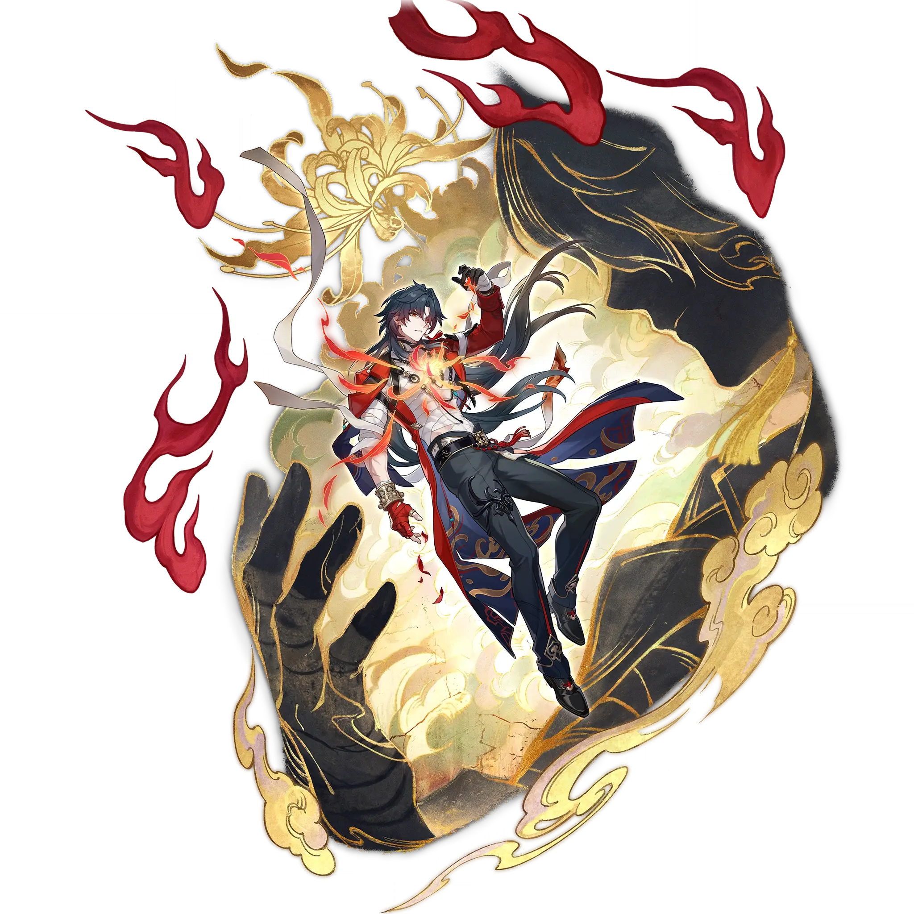

Mortenax Blade
Best Mortenax Blade build guide for Honkai Star Rail. See Mortenax Blade's best Relics, Light Cones, teams, Eidolons, Trace priority, and how to play Mortenax Blade.
🔍 Detail Skill
Semua skill aktif dan pasif beserta efeknya.
Deals Fire DMG equal to #1[i]% of Mortenax Blade's Max HP to one designated enemy, and causes the target to enter the Taunt state for 1 turn.
Deals Fire DMG equal to #1[i]% of Mortenax Blade's Max HP to one designated enemy, and causes the target to enter the Taunt state for 1 turn.
Consumes HP equal to 10% of Mortenax Blade's Max HP and deals Fire DMG equal to #1[i]% of Mortenax Blade's Max HP to all enemies, and additionally deals 4 instance(s) of DMG, with each instance dealing Fire DMG equal to #2[i]% of Mortenax Blade's Max HP to one random enemy. If the current HP is insufficient, Mortenax Blade's current HP will be reduced to 1 when using his Skill. While not in the "I
While the Zone is active, after each attack an ally target uses on an enemy, inflicts the "Balefire Bind" state on the corresponding enemy target and grants 1 Charge to Mortenax Blade. When Charge reaches 9 points and Mortenax Blade's current HP is more than 1, consumes 9 Charge, regenerates #1[i] Energy, and enables Mortenax Blade to use Skill 1 extra time. This extra Skill use is considered as F
Immediately attacks all enemies within a certain range. After entering combat, inflicts the Taunt state on all enemies for 1 turn and decreases DMG taken by this unit by 90% for 2 turn(s).
⚔ Light Cone Terbaik
Diurutkan dari yang paling kuat. Persentase menunjukkan performa relatif terhadap pilihan terbaik.
💎 Relic Set Terbaik
Set terbaik untuk karakter ini, diurutkan berdasarkan prioritas.
📊 Stat Utama
Stat yang dicari pada tiap slot.
👥 Tim yang Direkomendasikan
Karakter yang sering dipasangkan bersama Mortenax Blade.
 Acheron
Acheron
 Ashveil
Ashveil
 Tribbie
Tribbie
 Feixiao
Feixiao
 Castorice
Castorice
🔗 Lanjutkan
Build ini dirangkum dari Prydwen Institute. Starwise tidak menghitung sendiri. Angka bisa berubah setelah patch atau karakter baru rilis.